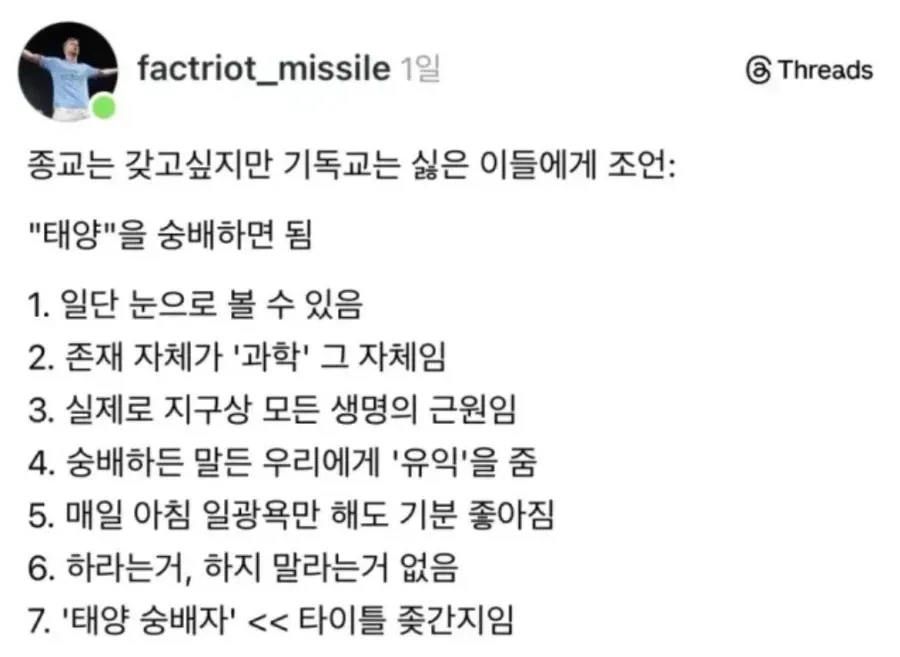
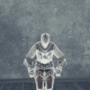

태양만세!

태양만세!
Sun worshiper
오버나이트, 아이 비케임 어 선월쉽퍼
대 칼 린
태양은 원망 못하잖아
집에 에어컨 치우면 여름에 바로 원망할거같은데 ㅋㅋ
에어컨을 치운 자를 원망하겠다
신은 뭐 이야기가 되거나 눈에 보여서 원망함?
태양이시여! 저한테 왜 이러십니까!
\[T]/
\[ T]/
Praise the Sun! \[T]/

천주교는 어떰? 다녀볼까... 그냥 유럽여행 다니다보면 동네 성당 한번씩 들려주면 재밋던뎅
천주교도 기독교는 기독교잖아
이게 기독교라는 정의가 사람마다 틀림
사전적으로는 기독교는 천주교+개신교+유대교임
지금 박진영이 하고 있는것도 기독교임
이단도 기독교야
사람마다 틀림 x
오용하는 병신이 많음 o
엥...유대교가 낀다고? 그리스정교회랑 로마카톨릭, 프로테스탄트로 알고 있었는데...
아 니 댓글 보고 다시 적음 유대교는 빼야 겠네
기독교눈
천주교와 개신교로 크게 두가지로 나뉨
천주교 신자로서 얘기하자면 좋음. 강요가 없음. 근데 굳이 종교를 가져야할까
그런 마인드로 다닐빠엔 안다니는게 ..
유가 도가 불교경전 처럼 성경에대한 지식이 있다는건 좋은거같음
나도 불교경전 갖고 싶음
마계~
일단 태양이라는 우리 행성의 모항성이라는 특수적인 위치가 있거니와 과학적 지식이 없더라도 그 압도적인 빛에서 숭배할만 함. 괜히 어지간한 동서양 신대륙문화권까지 어딜가도 태양은 주요 숭배대상이었음. 주신격이었던 곳들도 많고
장기간 일광욕을 즐기지 못한다면 망자화 가능성 있음ㅋㅋㅋㅋ
하면 안되는거 맨눈으로 태양보기
기안84외에는 하지마
군필자들은 태양의 필요성과 두려움 모두 알지
가장 원시적인 근본 신앙 아니냐ㅋㅋ
토테미즘이지
자소서쓸때 종교란에 태양숭배 쓰면 되는거지?
미트라교는 실존한다
태양 만세!
태양을 숭배해라!
50억년뒤소멸예정ㄷㄷ
정지훈!!! 이 이단녀석!!
날아다니는 스파게티를 믿으셈
나는 과학을 숭배함
딱히 전능하지도 전지하지도 선악도 없지만 점점 뼈와살이 붙어가며 전지전능이 되어가심
Engage in jolly co-operation!
Now sun is blazy
태양숭배자세 요가 한싸이클 딱 때리면 건강에도 좋아
?:저는 암월의 수호자에요 감금 및 TS를 좋아하죠
여름만 되면 신앙심이 흔들리는건 어떡함??
자외선 차단제는 태양님게서 내려보낸 축복을 거부하는것 입니다. 시계자국과 안경자국이야말로 그분의 사랑을 증명하는 모습입니다.
너의 눈 코 입
마즘